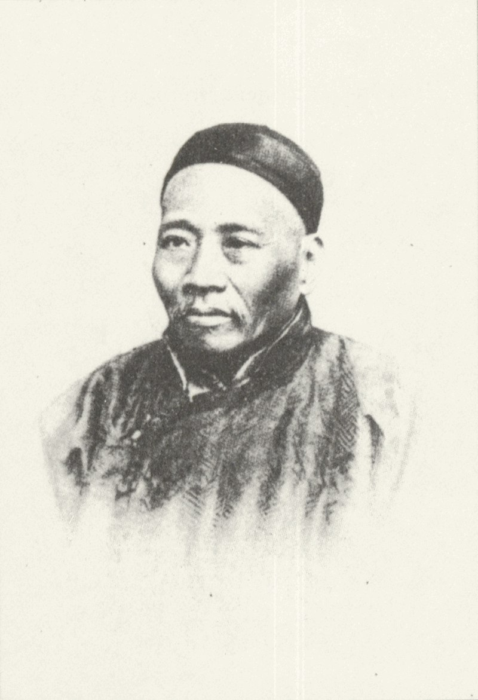

Ван Тао (кит. упр. 王韬, пиньиньWáng Tāo, 10 ноября1828
— 24 мая 1897) — китайский писатель, переводчик,журналист, каноновед времён династии Цин. Получив в 1845 году низшую
конфуцианскую степень сюцай, Ван Тао стал сотрудничать с
европейскими миссионерами, сочувственно
отнёсся
к Тайпинскому восстанию, возможно, встречался с
одним из его лидеров — Хун
Жэньганем, из-за чего власти сочли его посетил вместе с
ним Великобританию (1867—1870). На обратном пути в Китай побывал во Франции,неблагонадёжным. Получив убежище в
английском консульстве в Шанхае, Ван Тао эмигрировал в Британский
Гонконг. В 1862—1873 годах был помощником
знаменитого китаеведа Джеймса Легга,в 1879 году посетил Японию. С 1884 года
обосновался в Шанхае, где вновь
сотрудничал с миссионерскимииздательствами. Ассистируя Леггу, Ван Тао занималсякомментированием конфуцианских
канонов, но еготруды по каноноведению остались в рукописях. В 1889 году опубликовал новаторскую работу, в
которойпровёл привязкусобытийного ряда «Чунь цю» и «Цзо чжуани» к астрономическим
явлениям,прежде всего — солнечным
и лунным затмениям.
Ван Тао — один из основоположников журналистики в Китае. Известен также поэтическим творчеством и путевыми
записками, а также эпистолярным наследием, опубликованным между
1882 и 1889 годами в 30 цзюанях. Являлся одним из
первых идеологов Китая, ратовавших за «самоусиление» страны, предложил несколько проектов Ли
Хунчжану и Цзэн Гофаню.
В конце жизни интересовался реформаторским движением Кан Ювэя
и его учеников, публиковал их статьи
в своих изданиях.